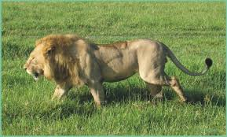
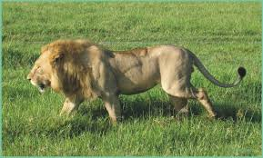

Голова льва крупная, с вытянутой мордой и сильными челюстями. Клыки у него длинные (около 8 см), количество зубов – 30 шт. Эти особенности дают льву возможность охотиться на больших травоядных животных. Язык покрыт бугорками, благодаря которым лев может чистить свою шерсть от грязи и устранять насекомых.
Львы – хищники и питаются только мясом. Основным добытчиком пищи в прайде являются львицы. ... Основой рациона львов в Африке чаще всего становятся зебры, гну, бородавочники, буйволы. Иногда употребляют животных и небольших размеров, таких как газели Томсона и антилопы.
 
